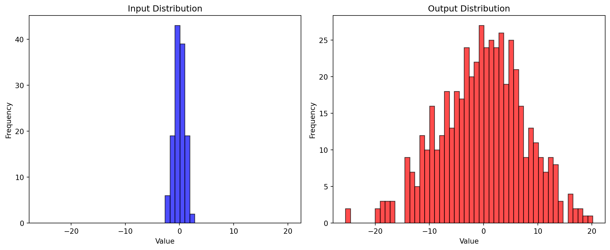
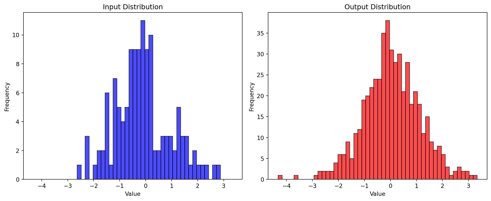
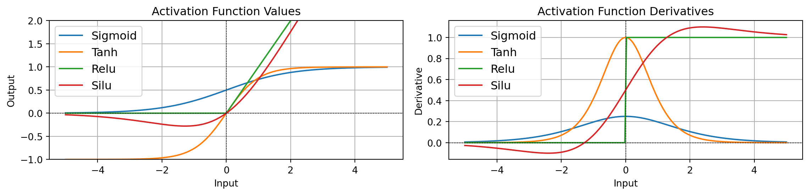
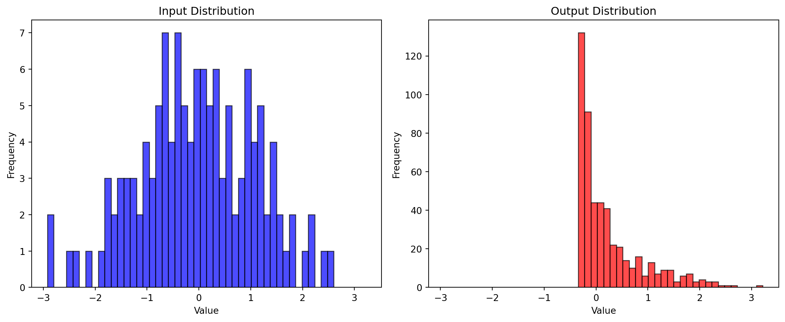

Code
import matplotlib.pyplot as plt
import torch
import math
import time
print(torch.__version__)
DEVICE = "cpu"2.12.0이번 포스트의 목표는 딥러닝의 가장 기본이 되는 구성 요소인 다층 퍼셉트론(Multi-Layer Perceptron, MLP) 을 직접 구현하며 그 작동 원리를 이해하는 것입니다.
복잡한 신경망도 결국은 두 가지 단순한 모듈의 반복적인 조합으로 이루어져 있습니다.
이번 강의는 다음 세 가지 순서로 진행됩니다.
전체 구현은 PyTorch를 기반으로 하며, 자세한 API는 PyTorch 공식 문서를 참고하시면 좋습니다. 먼저 필요한 라이브러리를 불러오겠습니다.
import matplotlib.pyplot as plt
import torch
import math
import time
print(torch.__version__)
DEVICE = "cpu"2.12.0신경망의 가장 기본적인 변환 모듈인 선형 변환을 먼저 살펴보겠습니다. 선형 변환은 입력 텐서 \(x\)를 받아 출력 텐서 \(y\)로 다음과 같이 변환합니다.
\[y = xW + b\]
각 텐서의 형태(shape)는 다음과 같습니다.
여기서 핵심은 마지막 차원(feature 차원)만 \(n_{in}\)에서 \(n_{out}\)으로 바뀌고, 앞쪽의 배치/공간 차원들(\(d_1, \dots, d_k\))은 그대로 유지된다는 점입니다. 즉 가중치 행렬 \(W\)는 가장 안쪽 차원에 대해서만 작용하며, PyTorch의 torch.matmul은 이러한 배치 차원에 대한 브로드캐스팅(broadcasting)을 자동으로 처리해 줍니다.
보충 (선형대수): 식 \(y = xW + b\)에서 \(x\)의 한 행 \(x_{k,:} \in \mathbb{R}^{n_{in}}\)이 \(W\)와 곱해지면 \(\mathbb{R}^{n_{out}}\)의 한 행 \(y_{k,:}\)가 됩니다. 성분 단위로 쓰면 \(y_{k,j} = \sum_{i=1}^{n_{in}} x_{k,i} W_{i,j} + b_j\) 이며, 이 표기는 뒤에서 분산을 유도할 때 그대로 사용됩니다.
이제 무작위로 초기화된 가중치를 갖는 선형 함수를 구현하겠습니다. 가중치 \(W\)는 표준 정규분포 \(\mathcal{N}(0,1)\)에서 샘플링하고, 편향 \(b\)는 관례에 따라 0으로 초기화합니다.
class Linear():
"""
Computes a linear function: y = xW + b
Parameters:
x (torch.Tensor): Input tensor of shape (..., input_dim)
self.weight (torch.Tensor): Weight tensor of shape (input_dim, output_dim)
self.bias (torch.Tensor): Bias tensor of shape (output_dim)
Returns:
torch.Tensor: Output tensor of shape (..., output_dim)
"""
def __init__(self, input_dim, output_dim):
# N(0,1)에서 가중치 무작위 초기화, 편향은 0
self.weight = torch.randn(input_dim, output_dim)
self.bias = torch.zeros(output_dim)
def __call__(self, x):
# y = xW + b
output = torch.matmul(x, self.weight) + self.bias
return output구현이 의도대로 동작하는지, 입력과 출력의 형태를 확인해 보겠습니다.
batch_size = 2
input_dim = 64
output_dim = 256
# 무작위 입력 텐서
x = torch.randn(batch_size, input_dim)
# 선형 함수 출력 계산
linear = Linear(input_dim, output_dim)
y = linear(x)
print("input size :", x.shape) # torch.Size([2, 64])
print("output size :", y.shape) # torch.Size([2, 256])input size : torch.Size([2, 64])
output size : torch.Size([2, 256])배치 차원 2는 그대로 유지된 채, feature 차원만 64 → 256으로 변환되었음을 확인할 수 있습니다.
선형 변환이 데이터의 분포를 어떻게 바꾸는지 시각적으로 확인해 보겠습니다. 아래 함수는 입력과 출력의 값을 모두 펼쳐(flatten) 히스토그램으로 그려 줍니다.
def histogram(x, y):
# 히스토그램을 위해 입력/출력을 1차원으로 펼침
x_flat = x.flatten().numpy()
y_flat = y.flatten().numpy()
ranges = (min(x_flat.min(), y_flat.min()), max(x_flat.max(), y_flat.max()))
plt.figure(figsize=(12, 5))
plt.subplot(1, 2, 1)
plt.hist(x_flat, bins=50, color='blue', alpha=0.7, edgecolor='black', range=ranges)
plt.title("Input Distribution")
plt.xlabel("Value"); plt.ylabel("Frequency")
plt.subplot(1, 2, 2)
plt.hist(y_flat, bins=50, color='red', alpha=0.7, edgecolor='black', range=ranges)
plt.title("Output Distribution")
plt.xlabel("Value"); plt.ylabel("Frequency")
plt.tight_layout()
plt.show()histogram(x, y)

위 그림에서 보듯, 출력의 분산은 입력보다 훨씬 커졌습니다. 이렇게 한 층을 통과할 때마다 분산이 커지면, 신경망에서 여러 층을 쌓을 때 값이 폭발(또는 소멸)하여 수치적으로 불안정해집니다. 따라서 층을 통과해도 분산이 일정하게 유지되도록 가중치를 적절히 초기화하는 것이 중요합니다.
이를 위해 출력의 분산 \(\mathrm{Var}[y_{k,j}]\)를 직접 유도해 보겠습니다.
출력의 한 성분은 \(y_{k,j} = \sum_{i=1}^{n_{in}} x_{k,i} W_{i,j} + b_j\) 이므로, 독립인 \(n_{in}\)개 항의 합의 분산은 각 항의 분산을 더한 것과 같습니다.
\[ \mathrm{Var}[y_{k,j}] = \mathrm{Var}\!\left[\sum_i x_{k,i} W_{i,j} + b_j\right] = n_{in}\,\mathrm{Var}[x_{k,i} W_{i,j}]. \]
여기서 두 독립 확률변수의 곱의 분산 공식을 사용합니다.
보충 (확률론) — \(\mathrm{Var}[AB]\) 유도. \(A, B\)가 독립이면 \(E[AB]=E[A]E[B]\)이고, \[ \begin{aligned} \mathrm{Var}[AB] &= E[(AB)^2] - (E[AB])^2 = E[A^2]E[B^2] - E[A]^2 E[B]^2 \\ &= (\mathrm{Var}[A]+E[A]^2)(\mathrm{Var}[B]+E[B]^2) - E[A]^2 E[B]^2 \\ &= \mathrm{Var}[A]\mathrm{Var}[B] + E[B]^2\mathrm{Var}[A] + E[A]^2\mathrm{Var}[B]. \end{aligned} \] 즉 \(\mathrm{Var}[AB] = E[A]^2\mathrm{Var}[B] + E[B]^2\mathrm{Var}[A] + \mathrm{Var}[A]\mathrm{Var}[B]\) 입니다.
이제 \(W\)와 \(x\)가 평균이 0인 경우(\(E[x_{k,i}] = E[W_{i,j}] = 0\)), 위 공식에서 평균이 들어간 두 항이 사라지고 마지막 항만 남습니다.
\[ \mathrm{Var}[x_{k,i} W_{i,j}] = \mathrm{Var}[x_{k,i}]\,\mathrm{Var}[W_{i,j}]. \]
따라서 출력의 분산은 다음과 같이 정리됩니다.
\[ \mathrm{Var}[y_{k,j}] = n_{in}\,\mathrm{Var}[x_{k,i}]\,\mathrm{Var}[W_{i,j}]. \]
우리가 원하는 것은 입력과 출력의 분산이 같아지는 것, 즉 \(\mathrm{Var}[y_{k,j}] = \mathrm{Var}[x_{k,i}]\) 입니다. 위 식에 대입하면
\[ n_{in}\,\mathrm{Var}[x_{k,i}]\,\mathrm{Var}[W_{i,j}] = \mathrm{Var}[x_{k,i}] \quad\Longrightarrow\quad \boxed{\mathrm{Var}[W_{i,j}] = \frac{1}{n_{in}}} \]
라는 조건을 얻습니다.
보충 (구현으로의 연결).
torch.randn은 분산이 1인 표준 정규분포 샘플을 주므로, 여기에 \(1/\sqrt{n_{in}}\)을 곱하면 분산이 정확히 \((1/\sqrt{n_{in}})^2 = 1/n_{in}\)이 됩니다. 이는 LeCun 초기화의 핵심 아이디어이며, 같은 발상을 확장한 것이 활성함수까지 고려하는 Xavier(Glorot) 초기화(\(\mathrm{Var}[W] = 2/(n_{in}+n_{out})\), tanh 계열)와 He 초기화(\(\mathrm{Var}[W] = 2/n_{in}\), ReLU 계열)입니다.
유도한 조건 \(\mathrm{Var}[W] = 1/n_{in}\)을 반영하여 가중치를 \(1/\sqrt{n_{in}}\) 배로 스케일링하도록 Linear 클래스를 수정합니다.
class Linear():
"""
Computes a linear function: y = xW + b (variance-preserving init)
"""
def __init__(self, input_dim, output_dim):
# 가중치 무작위 초기화
self.weight = torch.randn(input_dim, output_dim)
# 입력과 출력의 분산이 같아지도록 가중치 재조정
self.weight *= 1 / math.sqrt(input_dim)
self.bias = torch.zeros(output_dim)
def __call__(self, x):
return torch.matmul(x, self.weight) + self.bias다시 입력과 출력의 분포를 비교해 보겠습니다.
batch_size = 2
input_dim = 64
output_dim = 256
x = torch.randn(batch_size, input_dim)
linear = Linear(input_dim, output_dim)
y = linear(x)
histogram(x, y)

현실의 데이터 대부분은 비선형(non-linear) 관계를 가집니다. 이러한 관계를 학습하려면 모델 자체가 비선형 함수로 매개변수화되어야 합니다.
딥러닝에서 자주 쓰이는 네 가지 활성함수를 소개합니다.
| 이름 | 수식 |
|---|---|
| Sigmoid | \(\sigma(x) = \dfrac{1}{1+e^{-x}}\) |
| Tanh (Tangent hyperbolic) | \(\dfrac{e^x - e^{-x}}{e^x + e^{-x}}\) |
| ReLU (Rectified Linear Unit) | \(\max(0, x)\) |
| SiLU (Sigmoid Linear Unit) | \(\dfrac{x}{1+e^{-x}} = x\,\sigma(x)\) |
순전파(forward)뿐 아니라, 역전파(backpropagation)에 필요한 도함수(grad) 까지 함께 구현합니다.
class Activation():
def __init__(self, name):
self.name = name
def __call__(self, x):
"""y = act(x), 입력과 같은 형태의 출력을 반환"""
if self.name == 'sigmoid':
return 1 / (1 + torch.exp(-x))
elif self.name == 'tanh':
return (torch.exp(x) - torch.exp(-x)) / (torch.exp(x) + torch.exp(-x))
elif self.name == 'relu':
return torch.clamp(x, min=0.)
elif self.name == 'silu':
# SiLU(x) = x * sigmoid(x)
return x / (1 + torch.exp(-x))
else:
raise ValueError("Unsupported activation function")
def grad(self, x):
if self.name == 'sigmoid':
return (1 / (1 + torch.exp(-x))) * (1 - (1 / (1 + torch.exp(-x))))
elif self.name == 'tanh':
return 1 - ((torch.exp(x) - torch.exp(-x)) / (torch.exp(x) + torch.exp(-x))) ** 2
elif self.name == 'relu':
return (x > 0.).float()
elif self.name == 'silu':
return (1 / (1 + torch.exp(-x))) * (1 + x * (1 - (1 / (1 + torch.exp(-x)))))
else:
raise ValueError("Unsupported activation function")구현된 grad가 어디서 나왔는지, 각 함수의 미분을 단계별로 유도해 보겠습니다.
Sigmoid: \(\sigma(x) = (1+e^{-x})^{-1}\) 에 연쇄법칙을 적용하면 \[ \sigma'(x) = -(1+e^{-x})^{-2}\cdot(-e^{-x}) = \frac{e^{-x}}{(1+e^{-x})^2} = \sigma(x)\bigl(1-\sigma(x)\bigr). \] 마지막 등식은 \(\dfrac{e^{-x}}{1+e^{-x}} = 1-\sigma(x)\) 임을 이용한 것입니다.
Tanh: \(\tanh(x) = \dfrac{e^x - e^{-x}}{e^x + e^{-x}}\) 의 미분은 잘 알려진 항등식 \[ \tanh'(x) = 1 - \tanh^2(x) \] 로 정리됩니다. (분수의 미분을 직접 전개해도 동일한 결과를 얻습니다.)
ReLU: \(\max(0,x)\) 는 \(x>0\)일 때 기울기 1, \(x<0\)일 때 기울기 0이므로 \[ \text{ReLU}'(x) = \mathbb{1}[x>0]. \] (\(x=0\)에서는 미분이 정의되지 않으나, 구현에서는 관례적으로 0으로 처리합니다.)
SiLU: \(\text{SiLU}(x) = x\,\sigma(x)\) 에 곱의 미분법칙을 적용하면 \[
\begin{aligned}
\text{SiLU}'(x) &= \sigma(x) + x\,\sigma'(x) \\
&= \sigma(x) + x\,\sigma(x)\bigl(1-\sigma(x)\bigr) \\
&= \sigma(x)\Bigl(1 + x\bigl(1-\sigma(x)\bigr)\Bigr).
\end{aligned}
\] 이 결과가 위 코드의 silu grad 식과 정확히 일치합니다.
네 함수의 값과 도함수를 함께 그려, 그 차이를 시각적으로 비교해 보겠습니다.
x_vals = torch.linspace(-5, 5, 200)
plt.figure(figsize=(12, 3))
plt.subplot(1, 2, 1)
for name in ['sigmoid', 'tanh', 'relu', 'silu']:
act_fn = Activation(name)
y_vals = act_fn(x_vals)
plt.plot(x_vals.numpy(), y_vals.numpy(), label=name.capitalize())
plt.axhline(0, color='black', linewidth=0.5, linestyle='--')
plt.axvline(0, color='black', linewidth=0.5, linestyle='--')
plt.title("Activation Function Values")
plt.xlabel("Input"); plt.ylabel("Output")
plt.ylim(-1, 2); plt.legend(fontsize=12); plt.grid(True)
plt.subplot(1, 2, 2)
for name in ['sigmoid', 'tanh', 'relu', 'silu']:
act_fn = Activation(name)
y_vals = act_fn.grad(x_vals)
plt.plot(x_vals.numpy(), y_vals.numpy(), label=name.capitalize())
plt.axhline(0, color='black', linewidth=0.5, linestyle='--')
plt.axvline(0, color='black', linewidth=0.5, linestyle='--')
plt.title("Activation Function Derivatives")
plt.xlabel("Input"); plt.ylabel("Derivative")
plt.legend(fontsize=12); plt.grid(True)
plt.tight_layout()
plt.show()

위 그림에서 다음과 같은 중요한 시사점을 얻을 수 있습니다.
선형 변환 뒤에 SiLU를 적용했을 때 출력 분포가 어떻게 바뀌는지 확인해 보겠습니다.
x = torch.randn(batch_size, input_dim)
linear = Linear(input_dim, output_dim)
act_fn = Activation('silu')
y = act_fn(linear(x))
histogram(x, y)

지금까지 만든 두 모듈을 조합하면 드디어 다층 퍼셉트론(MLP) 을 만들 수 있습니다. MLP는 선형 변환과 활성함수로 이루어진 여러 층을 쌓아, 비선형 관계를 모델링합니다.
선형 변환과 활성함수를 교차로(interleaving) 배치하면, 가장 단순한 형태의 MLP 층을 다음과 같이 구성할 수 있습니다.
\[ \text{MLP}(x) = \text{Linear}_2 \circ \text{SiLU} \circ \text{Linear}_1(x) \]
이때 출력의 차원이 입력과 같다는 점(\(\text{dim} \to \text{dim}\))이 특징인데, 이런 구조 덕분에 동일한 MLP 블록을 여러 개 반복해서 쌓을 수 있습니다.
class MLP():
def __init__(self, dim, hidden_dim):
# MLP에 필요한 층 선언
# Linear_1 : dim -> hidden_dim
# Linear_2 : hidden_dim -> dim
self.w1 = Linear(dim, hidden_dim)
self.w2 = Linear(hidden_dim, dim)
self.act_fn = Activation('silu')
def __call__(self, x):
"""A MLP layer: y = MLP(x), 입력과 같은 차원의 출력을 반환"""
# MLP(x) = Linear_2( SiLU( Linear_1(x) ) )
h = self.w1(x)
h = self.act_fn(h)
output = self.w2(h)
return outputbatch_size = 2
input_dim = 64
hidden_dim = 256
x = torch.randn(batch_size, input_dim)
mlp = MLP(input_dim, hidden_dim)
y = mlp(x)
print("input size :", x.shape) # torch.Size([2, 64])
print("output size :", y.shape) # torch.Size([2, 64])input size : torch.Size([2, 64])
output size : torch.Size([2, 64])입력 차원 64가 내부적으로 은닉 차원 256으로 확장되었다가 다시 64로 돌아온 것을 확인할 수 있습니다. 입력과 출력의 형태가 동일하므로, 이 블록을 여러 개 이어 붙여 더 깊은 신경망을 구성할 수 있습니다.
이번 포스트에서는 신경망의 가장 기본적인 빌딩 블록들을 직접 구현하며 다음을 이해했습니다.
다음 단계에서는 이렇게 만든 MLP를 실제 과제에 대해 최적화(학습) 하게 됩니다. 그 핵심 도구인 역전파(backpropagation)는 backprop.ipynb에서 이어집니다.